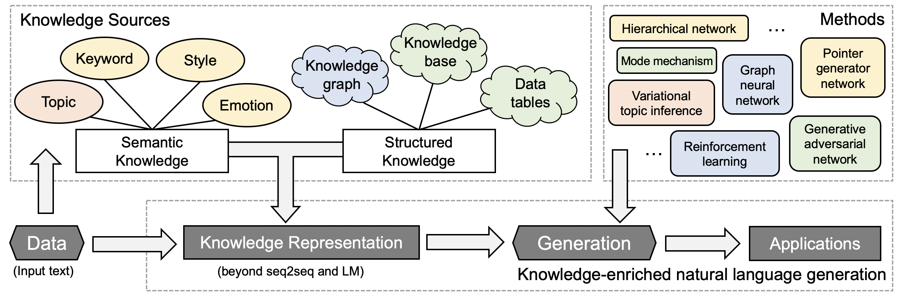
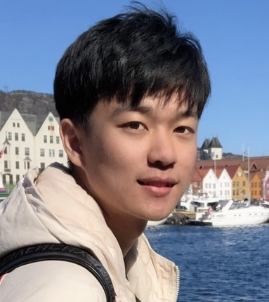

Knowledge-Enriched Natural Language Generation
Tutorial in the 2021 Conference on Empirical Methods in Natural Language Processing (EMNLP)
Location: Punta Cana, Dominican Republic Conference date: 7th – 11th November 2021
Attend the tutorial
Time: November 10th 9:00-12:30pm AST (Punta Cana time)
Onsite: Barceló Bávaro Convention Centre
At room Bavaro 3!
Online: EMNLP underline.io system
You need to register and login the underline system! Join: https://underline.io/events/192/sessions?eventSessionId=7843
Tutorial abstract
Knowledge-enriched text generation poses unique challenges in modeling and learning, driving active research in several core directions, ranging from integrated modeling of neural representations and symbolic information in the sequential, hierarchical and graphical structures, learning without direct supervisions due to the cost of structured annotation, efficient optimization and inference with massive and global constraints, to language grounding on multiple modalities, and generative reasoning with implicit commonsense knowledge and background knowledge. In this tutorial we will present a roadmap to line up the state-of-the-art methods to tackle these challenges on this cutting-edge problem. We will dive deep into various technical components: how to represent knowledge, how to feed knowledge into a generation model, how to evaluate generation results?
Figure 1: In this tutorial, we will present advanced NLG methods that inject knowledge from a variety of sources.
Tutorial materials
Tutorial schedule
| Local time (AST) | Content [Description] |
|---|---|
| 09:00-09:10am | Motivation and Overall (Jiang) [slides] |
| 09:10-09:50am | General Methods of Integrating Knowledge into NLG (Hu, Rajani) [slides(Hu)] [slides(Rajani)] |
| 09:50-10:15am | NLG Methods Enhanced by Various Knowledge Source (Yu) [slides] |
| 10:15-10:45am | Coffee break |
| 10:45-11:10am | NLG Methods Enhanced by Various Knowledge Source (Yu) (cont.) |
| 11:10-12:00pm | Applications, Benchmark Datasets, Code Library and Hands-on Tutorial (Wang) [slides] |
| 12:00-12:15pm | Remaining Challenges and Future Directions (Ji) [slides] |
Tutor information

Wenhao Yu is a third-year Ph.D. student in the Department of Computer Science and Engineering at the University of Notre Dame. His research lies in controllable knowledge-driven natural language processing, particularly in natural language generation. His research has been published in top-ranked NLP and data mining conferences such as ACL, EMNLP, AAAI and KDD. He has interned at Microsoft Research and IBM Research.
Meng Jiang is an Assistant Professor in the Department of Computer Science and Engineering at the University of Notre Dame. His research interests include data mining, machine learning, and information extraction. He has published over 60 conference and journal papers of the topics. His work was KDD 2014 Best Paper Finalist. He has delivered seven tutorials in conferences such as KDD, SIGMOD, WWW, CIKM, ICDM, and SDM. He is the recipient of Notre Dame Global Gateway Faculty Award.
Zhiting Hu is an assistant professor in Halıcıoğlu Data Science Institute at UC San Diego. He received his Ph.D. in Machine Learning from Carnegie Mellon University. His research interest lies in the broad area of natural language processing in particular controllable text generation, machine learning to enable training AI agents from all forms of experiences such as structured knowledge, ML systems and applications. His research was recognized with best demo nomination at ACL 2019 and outstanding paper award at ACL 2016.
Qingyun Wang is a third-year Ph.D. student in the Computer Science Department at the University of Illinois at Urbana-Champaign. His research lies in controllable knowledge-driven language generation, with a recent focus on the scientific paper generation. He served as a program committee in generation track for multiple conferences (e.g., ICML, ACL, ICLR). He previously entered the finalist of the first Alexa Prize competition.
Heng Ji is a professor at Computer Science Department of University of Illinois at Urbana-Champaign, and Amazon Scholar. She has published on Multimedia Multilingual Information Extraction and Knowledge-enriched NLG including technical paper generation, knowledge base description, and knowledge-aware image and video caption generation. The awards she received include ``Young Scientist'' by World Economic Forum, ``AI's 10 to Watch'' Award by IEEE Intelligent Systems, NSF CAREER award, ACL 2020 and NAACL 2021 Best Demo Award.
Nazneen Rajani is a senior research scientist at Salesforce Research. She got her PhD in Computer Science from UT Austin in 2018. Several of her work has been published in ACL, EMNLP, NACCL, and IJCAI including work on generating explanations for commonsense and physical reasoning. Nazneen was one of the finalists for the VentureBeat Transform 2020 women in AI Research. Her work has been covered by several media outlets including Quanta Magazine, VentureBeat, SiliconAngle, ZDNet.
Contact Us
Please contact Wenhao Yu (wyu1@nd.edu) if you have any questions!